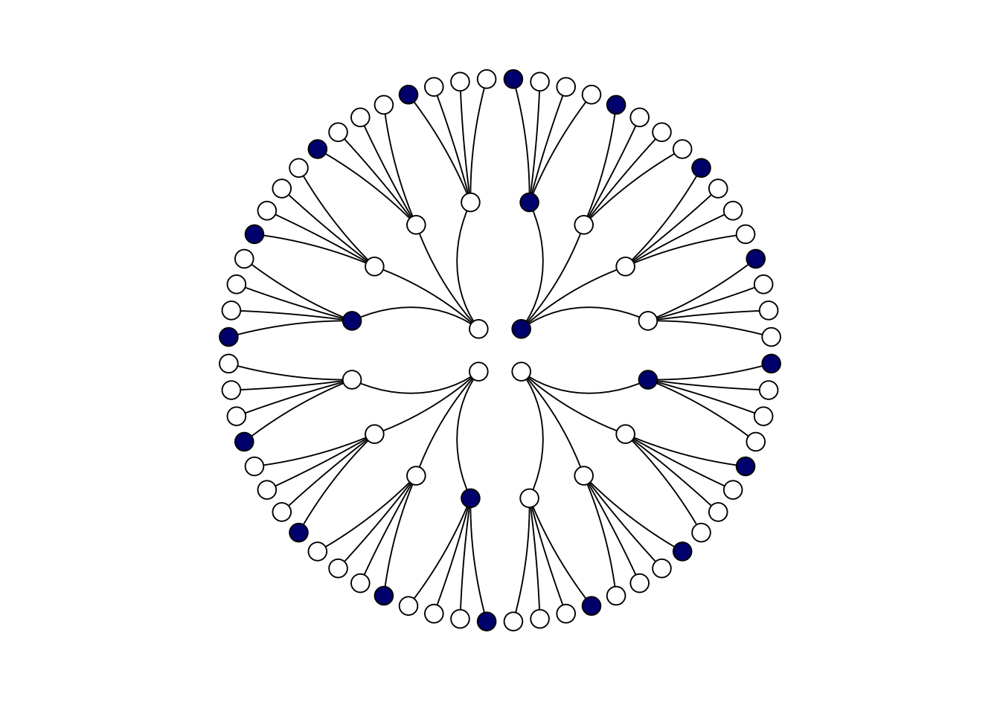
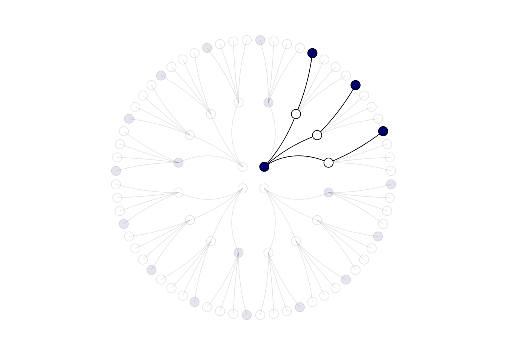
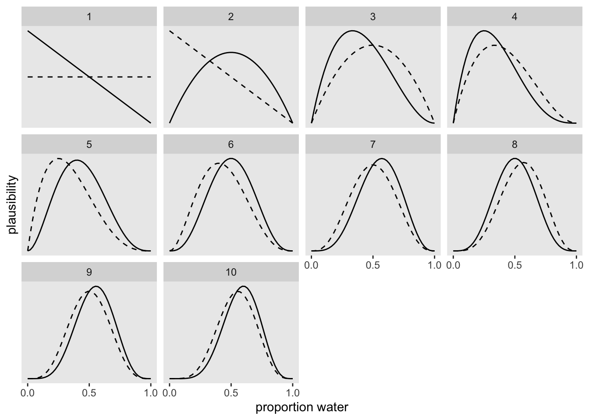
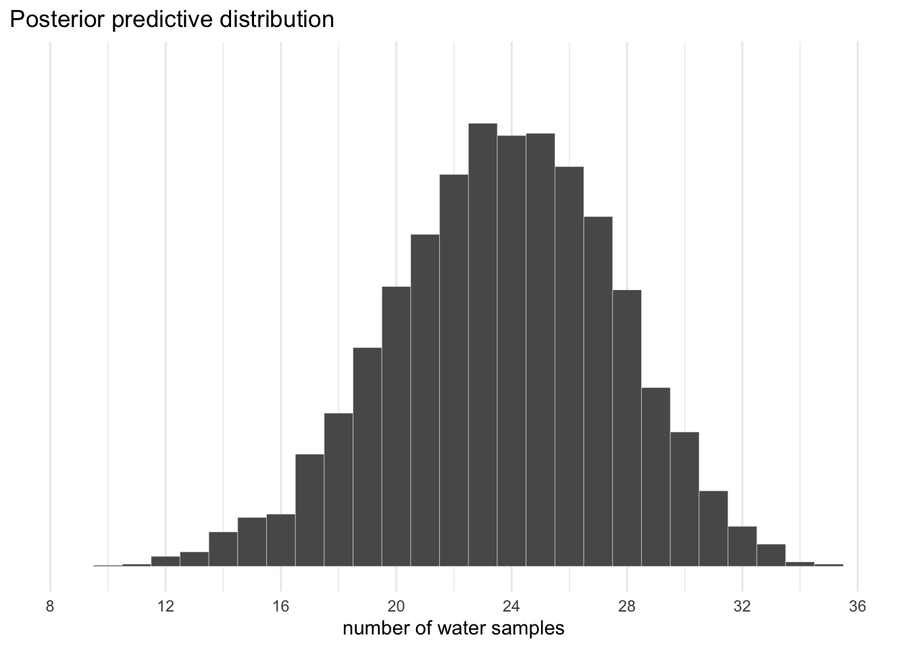
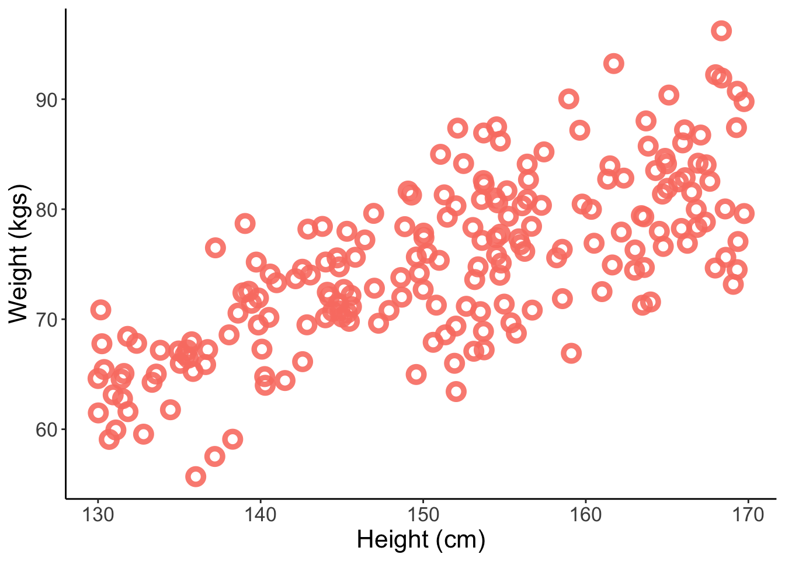
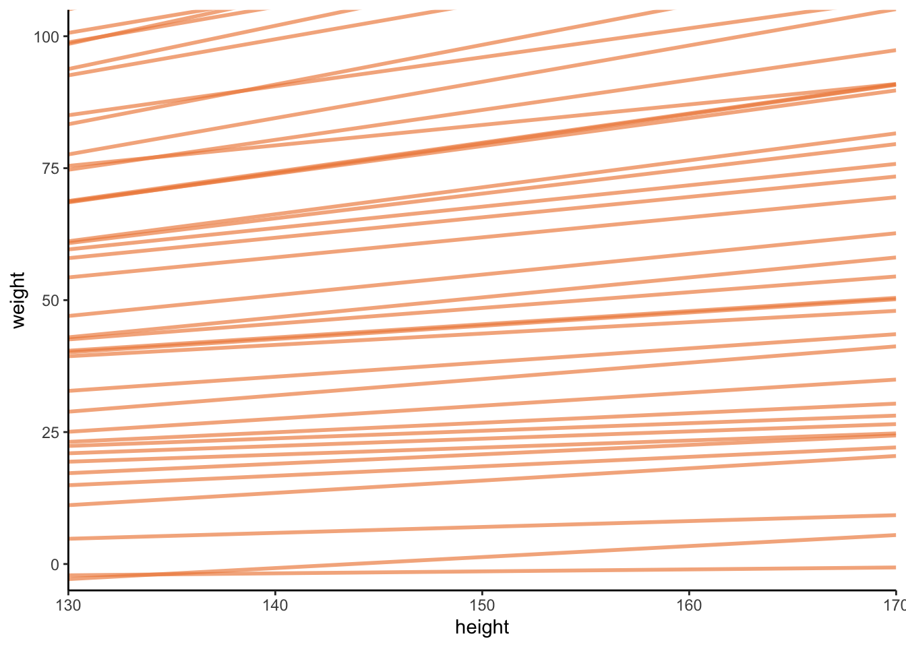
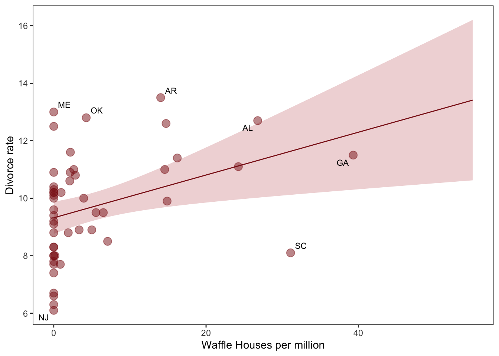

library(tidyverse) # for tidy codinglibrary(brms) # for fitting stan modelslibrary(patchwork) # for combining plotslibrary(ggdag) # drawing dagslibrary(tidybayes) # for bayesian data visualisationlibrary(bayesplot) # more bayes data vislibrary(MetBrewer) # colours library(ggrepel) # for nice text on ggplots
\(~\)
Lecture 1: The Golem of Prague
\(~\)
Causal inference: the attempt to understand the scientific causal model using data.
It is prediction - Knowing a cause means being able to predict the consequences of an intervention
It is a kind of imputation - Knowing a cause means being able to construct unobserved counterfactual outcomes
What if I do this types of questions.
Causal inference is intimately related to the description of populations and the design of research questions. This is because all three depend upon causal models/knowledge.
Describing populations depends upon causal inference because nealry always description depends upon the sample of the population wich you are using to predict population charactetiscs.
\(~\)
DAGs (Directed acyclic graphs)
\(~\)
Heuristic causal models that clarify scientific thinking.
We can use these to produce appropriate statistical models.
These help us think about the science before we think about the data.
Helps with questions like “what variables should we include in an analysis?”
An integral part of the course that will come up over and over again.
An example:
Lets make a function to speed up the DAG making process. We’ll use this a lot
Code
# Lets make a function to speed up the DAG making process. We'll use this a lotgg_simple_dag <-function(d) { d %>%ggplot(aes(x = x, y = y, xend = xend, yend = yend)) +geom_dag_point(color =met.brewer("Hiroshige")[4]) +geom_dag_text(color =met.brewer("Hiroshige")[7]) +geom_dag_edges() +theme_dag()}dagify( X ~ A + C, C ~ A + B, Y ~ X + C + B, coords =tibble(name =c("A", "C", "B", "X", "Y"),x =c(1, 2, 3, 1, 3),y =c(2, 2, 2, 1, 1))) %>%gg_simple_dag()
\(~\)
Golems
\(~\)
Statistical models are akin to Golems - clay robots brought to life by magic to follow specific tasks. The trouble is, they follow tasks extremely literally and are blind to their creators intent, so even those born out of the purest of intentions can cause great harm. Models are another form of robot; if we apply models within the wrong context they will not help us at all.
Ecological models are rarely designed to falsify null-hypotheses. This is because there are many possible non-null models or put another way there are no true null models in many systems. This is problematic because null models underlie how the majority of biologists do statistics!
A more appropriate question is to ask how multiple process models that we can identify are different.
Should falsify the explanatory model, not the null model. Make predictions and try and falify those. Karl Popper
\(~\)
Owls
\(~\)
Satistical modelling explanations often provide a brief introduction, then leave out many of the important details e.g. step 1: draw two circles, step 2: draw the rest of the fking owl.
We shall have a specific workflow for fitting models that we will document
Drawing the owl, or the scientific workflow can be broken down into 5 steps:
Theoretical estimand: what are you trying to do in your study in the first place?
Some scientific causal model should be identified: step 1 will be precisely defined in the context of a causal model.
Use 1 and 2 to build a statistical model.
Simulate the scientific casual model to validate that the statistical model from step 3 yields the theoretical estimand i.e. check that our stats model works.
Analyse the real data. Note that the real data are only introduced now.
\(~\)
Lecture 2: The garden of forking data
\(~\)
Globe tossing
To estimate the proportion of water on planet earth, we collect data by tossing a globe 10 times and record whether our left index finger lands on land or water.
# A tibble: 10 × 1
toss
<chr>
1 l
2 w
3 l
4 l
5 w
6 w
7 w
8 l
9 w
10 w
Remember the owl workflow:
Define generative model of sample.
Design estimand.
Use 1 and 2 to build a statistical model.
Test (3) using (1).
Analyse sample and summarise.
\(~\)
Step 1
Some true proportion of water, \(p\).
We can measure this indirectly using:
\(N\): the number of globe tosses
\(W\): the number of water observations
\(L\): the number of land observations
Code
#Put dag here#N affects L and W but not the other way around# P also influences W and L
Bayesian data analysis
For each possible explanation of the data, count all the ways data can happen. Explanations with more ways to produce the data are more plausible (this is entropy).
Toss globe, probability \(p\) of observing \(W\), \(1 - p\) of \(L\).
Each toss is random because it is chaotic (there are forces that could be theoretically measured i.e. velocity, exact starting orientation, but we are not equipped to measure these in real time, so the process appears random).
Each toss is independent of one another.
What are the relative number of ways we could get the data we actually got, given the process that generates all the possible datasets that could’ve been born from the process?
\(~\)
A 4 sided globe (dice)
In Bayesian analysis: enumerate all possible outcomes.
Code
# code land as 0 and water as 1 and create possibility data# create the dataframe (tibble)d <-tibble(p_1 =0,p_2 =rep(1:0, times =c(1, 3)),p_3 =rep(1:0, times =c(2, 2)),p_4 =rep(1:0, times =c(3, 1)),p_5 =1)d %>%gather() %>%mutate(x =rep(1:4, times =5),possibility =rep(1:5, each =4)) %>%ggplot(aes(x = x, y = possibility, fill = value %>%as.character())) +geom_point(shape =21, size =9) +scale_fill_manual(values =c("white", "navy")) +scale_x_continuous(NULL, breaks =NULL) +coord_cartesian(xlim =c(.75, 4.25),ylim =c(.75, 5.25)) +theme_minimal() +theme(legend.position ="none",text =element_text(size =18))
The data: the dice is rolled three times: water, land, water.
Consider all possible answers and how they would occur.
e.g. if we hypothesise that 25% of the earth is covered by water, what are all the possible ways to produce our sample?
Code
# create a tibble of all the possibilities per marble draw, with columns position (where to appear on later figures x axis), draw (what number draw is it? and how many for each number? where to appear on figures y axis) and fill (colour of ball for figure)d <-tibble(position =c((1:4^1) /4^0, (1:4^2) /4^1, (1:4^3) /4^2),draw =rep(1:3, times =c(4^1, 4^2, 4^3)),fill =rep(c("b", "w"), times =c(1, 3)) %>%rep(., times =c(4^0+4^1+4^2)))# we wish to make a path diagram, for which we will need connecting lines, create two more tibbles for theselines_1 <-tibble(x =rep((1:4), each =4),xend = ((1:4^2) /4),y =1,yend =2)lines_2 <-tibble(x =rep(((1:4^2) /4), each =4),xend = (1:4^3) / (4^2),y =2,yend =3)# We’ve generated the values for position (i.e., the x-axis), in such a way that they’re all justified to the right, so to speak. But we’d like to center them. For draw == 1, we’ll need to subtract 0.5 from each. For draw == 2, we need to reduce the scale by a factor of 4 and we’ll then need to reduce the scale by another factor of 4 for draw == 3. The ifelse() function will be of use for that.d <- d %>%mutate(denominator =ifelse(draw ==1, .5,ifelse(draw ==2, .5/4, .5/4^2))) %>%mutate(position = position - denominator)lines_1 <- lines_1 %>%mutate(x = x - .5,xend = xend - .5/4^1)lines_2 <- lines_2 %>%mutate(x = x - .5/4^1,xend = xend - .5/4^2)# create the plot, using geom_segment to add the lines - note coord_polar() which gives th eplot a globe-like effect. scale_x_continuous and the y equivalent have been used to remove axis lables and titlesd %>%ggplot(aes(x = position, y = draw)) +geom_segment(data = lines_1,aes(x = x, xend = xend,y = y, yend = yend),size =1/3) +geom_segment(data = lines_2,aes(x = x, xend = xend,y = y, yend = yend),size =1/3) +geom_point(aes(fill = fill),shape =21, size =4) +scale_fill_manual(values =c("navy", "white")) +scale_x_continuous(NULL, limits =c(0, 4), breaks =NULL) +scale_y_continuous(NULL, limits =c(0.75, 3), breaks =NULL) +theme_minimal() +theme(panel.grid =element_blank(),legend.position ="none") +coord_polar()

Prune the number of possible outcomes down to those that are consistent with the data.
e.g. there are 3 paths consistent with our dice rolling experiment for the given data and the given hypothesis.
Code
lines_1 <- lines_1 %>%mutate(remain =c(rep(0:1, times =c(1, 3)),rep(0, times =4*3)))lines_2 <- lines_2 %>%mutate(remain =c(rep(0, times =4),rep(1:0, times =c(1, 3)) %>%rep(., times =3),rep(0, times =12*4)))d <- d %>%mutate(remain =c(rep(1:0, times =c(1, 3)),rep(0:1, times =c(1, 3)),rep(0, times =4*4),rep(1:0, times =c(1, 3)) %>%rep(., times =3),rep(0, times =12*4))) # finally, the plot:d %>%ggplot(aes(x = position, y = draw)) +geom_segment(data = lines_1,aes(x = x, xend = xend,y = y, yend = yend,alpha = remain %>%as.character()),size =1/3) +geom_segment(data = lines_2,aes(x = x, xend = xend,y = y, yend = yend,alpha = remain %>%as.character()),size =1/3) +geom_point(aes(fill = fill, alpha = remain %>%as.character()),shape =21, size =4) +# it's the alpha parameter that makes elements semitransparentscale_alpha_manual(values =c(1/10, 1)) +scale_fill_manual(values =c("navy", "white")) +scale_x_continuous(NULL, limits =c(0, 4), breaks =NULL) +scale_y_continuous(NULL, limits =c(0.75, 3), breaks =NULL) +theme_minimal() +theme(panel.grid =element_blank(),legend.position ="none") +coord_polar()

Is 3 ways to produce the sample big or small, to find out, compare with other possibilities.
e.g. lets make another conjecture - all land or all water - we have a land and water observation so there are zero ways that the all land/water hypotheses are consistent with the data.
Code
# if we make two custom functions, here, it will simplify the code within `mutate()`, belown_water <-function(x){rowSums(x =="W")}n_land <-function(x){rowSums(x =="L")}t <-# for the first four columns, `p_` indexes positiontibble(p_1 =rep(c("L", "W"), times =c(1, 4)),p_2 =rep(c("L", "W"), times =c(2, 3)),p_3 =rep(c("L", "W"), times =c(3, 2)),p_4 =rep(c("L", "W"), times =c(4, 1))) %>%mutate(`roll 1: water`=n_water(.),`roll 2: land`=n_land(.),`roll 3: water`=n_water(.)) %>%mutate(`ways to produce`=`roll 1: water`*`roll 2: land`*`roll 3: water`)t %>% knitr::kable()
p_1
p_2
p_3
p_4
roll 1: water
roll 2: land
roll 3: water
ways to produce
L
L
L
L
0
4
0
0
W
L
L
L
1
3
1
3
W
W
L
L
2
2
2
8
W
W
W
L
3
1
3
9
W
W
W
W
4
0
4
0
Unglamorous basis of applied probability: Things that can happen more ways are more plausible.
This is Bayesian inference. Given a set of assumptions (hypotheses) the number of ways the numbers could have occurred accoridng to those assumptions (hypotheses) is the posterior probability distribution.
But we don’t really have enough evidence to be confident in a prediction. So lets roll the dice again. In bayes world a process called Bayesian updating exists, that saves you from running the draws again, in favour of just updating previous counts (or data). Bayesian updating is simple multiplication e.g. we roll another water, for the 3 water hypothesis there are 3 paths for this to occur so we multiply 9 x 3, resulting in 27 possible paths consistent with the new dataset.
Eventually though, the garden gets really big. This is where your computer comes in and it starts to make more sense to work with probabilities rather than counts.
sim_globe <-function(p =0.7, N =9) {sample(c("W", "L"), size = N, prob =c(p, 1-p), replace =TRUE)}# W and L are the possible observations# N is number of tosses# prob is the probabilities of water and land occurring
The simulation does this:
Code
sim_globe()
[1] "W" "L" "W" "W" "W" "W" "L" "W" "W"
Now lets test it on extreme settings
e.g. all water
Code
sim_globe(p=1, N =11)
[1] "W" "W" "W" "W" "W" "W" "W" "W" "W" "W" "W"
Looks good
We can also test how close the proportion of water produced in the simulation is to the specified p
Code
sum(sim_globe(p=0.5, N =1e4) =="W") /1e4
[1] 0.4864
Also looks good.
So based upon our generative model:
Ways for \(p\) to produce $W, L = (4p)^W * (4 - 4p)^L $
Code
# function to compute posterior distirbutioncompute_posterior <-function(the_sample, poss =c(0, 0.25, 0.5, 0.75, 1)) { W <-sum(the_sample =="W") # the number of W observed L <-sum(the_sample =="L") # the number of L observed ways <-sapply(poss, function(q) (q*4)^W * ((1-q)*4)^L) post <- ways/sum(ways)#bars <- sapply(post, function(q) make_bar(q))tibble(poss, ways, post =round(post, 3))#, bars)}
We can then simulate the experiment many times with sim_globe
This allows us to check that our model is doing what we think it is.
\(~\)
An infinite number of possibilties
Globes aren’t dice. There are an infinite number of possible proportions of the earth covered in water.
To get actual infinity we can turn to math.
The relative number of ways that nay value of \(p\) could produce any sample of W and L observations. This is a well know distribution called the binomial distribution
\[p^W(1-p)^L \]
The only trick is normalising to make it a probability. A little calculus is needed (this produces the beta distirbution:
Note the normalising constant \(\frac{(W + L)!}{W!L!}\)
We can use the binomial sampling formula to give us the number of paths through the garden of forking data for this particular problem. That is given some value of P (akin to some number of blue marbles in the bag), the number of ways to see W and L can be worked out using the expression above.
We can use R to calculate this, assuming 6 globe tosses that landed on water out of 10 possible tosses and that P = 0.7:
Code
dbinom(6, 10, 0.7)
[1] 0.2001209
This is the relative number of ways that 6 out of 10 can happen given a value of 0.7 for p. For this to be meaningful, we need to work out a probability value for many other values of P. This gives our probability distribution.
Lets plot how bayesian updating works, as we add observations
Code
# add the cumulative number of trials and successes for water to the dataframe.globe_toss_data <- globe_toss_data %>%mutate(n_trials =1:10, n_success =cumsum(toss =="w"))# Struggling to follow this code, awesome figure produced thoughsequence_length <-50globe_toss_data %>%expand(nesting(n_trials, toss, n_success),p_water =seq(from =0, to =1, length.out = sequence_length)) %>%group_by(p_water) %>%mutate(lagged_n_trials =lag(n_trials, k =1),lagged_n_success =lag(n_success, k =1)) %>%ungroup() %>%mutate(prior =ifelse(n_trials ==1, .5,dbinom(x = lagged_n_success,size = lagged_n_trials,prob = p_water)),likelihood =dbinom(x = n_success,size = n_trials,prob = p_water),strip =str_c("n = ", n_trials) ) %>%# the next three lines allow us to normalize the prior and the likelihood, # putting them both in a probability metricgroup_by(n_trials) %>%mutate(prior = prior /sum(prior),likelihood = likelihood /sum(likelihood)) %>%# plot timeggplot(aes(x = p_water)) +geom_line(aes(y = prior), linetype =2) +geom_line(aes(y = likelihood)) +scale_x_continuous("proportion water", breaks =c(0, 0.5, 1)) +scale_y_continuous("plausibility", breaks =NULL) +theme(panel.grid =element_blank()) +facet_wrap(~n_trials, scales ="free_y")

Posterior is continually updated as data points are added.
Each posterior is simply a multiplication of a set of diagonal lines, like that shown in the first panel. Whether the slope of the line is pos or neg depends on whether the observation is land or water.
Every posterior is a prior for the next observation, but the data order doesn’t make a difference, in that the posterior will always be the same for a given dataset. BUT this assumption can be violated if each observation is not independent.
Sample size is embodied within the shape of the posterior. Already been accounted for.
Some big things to grasp about bayes
No minimum sample size, because we have something called a prior. Note that estimation sucks with small samples, but that’s good! The model doesn’t draw too much from too little.
Shape of distribution embodies sample size
There are no point estimates e.g. means or medians. Everything is a distribution. You will never need to bootstrap again.
There is no one true interval - they just communicate the shape of the posterior distribution. No magical number e.g. 95%.
\(~\)
From posterior to prediction (brms time)
Here is a nice point to introduce brms the main modelling package that I use.
Let’s fit a globe tossing model, where we observe 24 water observations from 36 tosses.
Code
b1.1<-brm(data =list(w =24), family =binomial(link ="identity"), w |trials(36) ~0+ Intercept,#prior(beta(1, 1), class = b, lb = 0, ub = 1),seed =2,file ="fits/b02.01")b1.1
Family: binomial
Links: mu = identity
Formula: w | trials(36) ~ 0 + Intercept
Data: list(w = 24) (Number of observations: 1)
Draws: 4 chains, each with iter = 2000; warmup = 1000; thin = 1;
total post-warmup draws = 4000
Population-Level Effects:
Estimate Est.Error l-95% CI u-95% CI Rhat Bulk_ESS Tail_ESS
Intercept 0.66 0.08 0.51 0.80 1.00 1681 1947
Draws were sampled using sampling(NUTS). For each parameter, Bulk_ESS
and Tail_ESS are effective sample size measures, and Rhat is the potential
scale reduction factor on split chains (at convergence, Rhat = 1).
There’s a lot going on in that output. For now, focus on the ‘Intercept’ line. The intercept of a typical regression model with no predictors is the same as its mean. In the special case of a model using the binomial likelihood, the mean is the probability of a 1 in a given trial.
To use the posterior, we can sample from it using the as_draws_df function.
f %>%ggplot(aes(x = proportion)) +geom_density(fill ="grey50", color ="grey50") +annotate(geom ="text", x = .08, y =2.5,label ="Posterior probability") +scale_x_continuous("probability of water",breaks =c(0, .5, 1),limits =0:1) +scale_y_continuous(NULL, breaks =NULL) +theme(panel.grid =element_blank())
Strikingly similar (well, exactly the same).
We can use this distribution of probabilities to predict histograms of water counts.
Code
# the simulationset.seed(3) # so we get the same result every timef <- f %>%mutate(w =rbinom(n(), size =36, prob = proportion))# the plotf %>%ggplot(aes(x = w)) +geom_histogram(binwidth =1, center =0,color ="grey92", size =1/10) +scale_x_continuous("number of water samples", breaks =0:40*4) +scale_y_continuous(NULL, breaks =NULL, limits =c(0, 450)) +ggtitle("Posterior predictive distribution") +coord_cartesian(xlim =c(8, 36)) +theme_minimal()

\(~\)
Lecture 3: Geocentric models
\(~\)
It is entirely possible for a completely false model to make very accurate predictions.
Geocentrism is Mcelreath’s example: the idea that the planets orbit the earth and the model behind it can very accurately predict where Mars will be in the nights sky, including when it will be in retrograde (appearing to orbit in the opposite direction).
However, just because a model allows us to make accurate predictions does not mean it is correct. We now know that the planets orbit the sun, and this more correct model can also explain mar’s apparent retrograde movement.
The relevance of this anecdote is that prediction without explanation is thwart with danger, but at the same time models like the geocentric can be very helpful.
Linear regression is similar.
They are often descriptively accurate but mechanistically wrong.
Few things in nature are perfectly linear as is assumed.
They are useful but we must remember their limits
\(~\)
What are linear models
\(~\)
Simple statistical golems that model the mean and the variance of a variable. That’s it.
The mean is sum weighted sum of other variables. As those variables change, the mean and variance changes.
Anovas, Ancovas, t-tests are all linear models.
The normal distribution
Counts up all the ways the observations can happen given a set of assumptions.
Given some mean and variance the normal distribution gives you the relative number of ways the data can appear.
The normal distribution is the norm because:
It is very common in nature.
It’s easy to calculate
Very conservative assumptions (spreads probability out more than any other distribution, reducing the risk of mistake, at the expense of accuracy)
To understand why the normal distribution is so common consider a soccer pitch mid-line, and individuals flipping coins that dictate whether they should step to the left or the right.
Many individuals remain close to the line, while a few move towards the extremes. Simply, there are more ways to get a difference of 0 than there is any other result. This creates a bell curve and summarises processes to mean and variance. The path of one individual is shaded black in the figure below.
Code
# lets simulate this scenarioset.seed(4)pos <-replicate(100, runif(16, -1, 1)) %>%# this is the simas_tibble() %>%rbind(0, .) %>%# add a row of zeros above simulation resultsmutate(step =0:16) %>%# creates a step columngather(key, value, -step) %>%# convert data to long formatmutate(person =rep(1:100, each =17)) %>%# person IDs added# the next lines allow us to make cumulative sums within each persongroup_by(person) %>%mutate(position =cumsum(value)) %>%ungroup() # allows more data manipulationggplot(data = pos,aes(x = step, y = position, group = person)) +geom_vline(xintercept =c(4, 8, 16), linetype =2) +geom_line(aes(colour = person <2, alpha = person <2)) +scale_colour_manual(values =c("skyblue3", "black")) +scale_alpha_manual(values =c(1/5, 1)) +scale_x_continuous("step number", breaks =c(0, 4, 8, 12, 16)) +theme_minimal() +theme(legend.position ="none")
1. In this lecture we are going to focus on describing the association between height and weight in adults.
2. Scientific model: how does height affect weight?
Height influences weight, but not the other way around. Height is causal.
\(W = f(H)\) this means that weight is some function of height.
Code
dagify( W ~ H + U, coords =tibble(name =c("H", "W", "U"),x =c(1, 2, 3),y =c(1, 1, 1))) %>%gg_simple_dag()
Note the \(U\) in the DAG - an unobserved influence on weight.
Build a generative model
\(W = \beta H + U\)
Lets simulate the data
Code
sim_weight <-function(H, b, sd){ U <-rnorm(length(H), 0, sd) W <- b*H + Ureturn(W)}
Run the simulation and plot. We’ll need values for heights, a \(\beta\) value and some value of sd for weight in kgs
Code
sim_data <-tibble(H =runif(200, min =130, max =170)) %>%mutate(W =sim_weight(H, b =0.5, sd =5))# plotsim_data %>%ggplot(aes(x = H, y = W)) +geom_point(color ="salmon", shape =1.5, stroke =2.5, size =3, alpha =0.9) +theme_classic() +labs(x ="Height (cm)", y ="Weight (kgs)") +theme(text =element_text(size =16))

Describing our model
\(W_{i} = \beta H_{i} + U_i\) is our equation for expected weight
\(U_{i} = Normal(0,\sigma)\) is the Gaussian error with sd \(\sigma\)
\(H_{i} =\) Uniform\((130, 170)\) means that all values are equally likely for height between 130-170
\(i\) is an index and here represents individuals in the dataset
= indicates a deterministic relationship
~ indicates that something is “distributed as”
\(~\)
Build estimator
A linear model:
\(E(W_i|H_i) = \alpha + \beta H_{i}\)
\(\alpha\) = the intercept
\(\beta\) = the slope
Our estimator:
\(W_{i}\)~\(Normal(u_{i},\sigma)\)
\(u_{i}\)~\(\alpha + \beta H_{i}\)
In words: \(W\) is distributed normally with mean that is a linear function of H
Priors
We can specify these to be very helpful. We simply want to design priors to stop the model hallucinating impossible outcomes e.g. negative weights.
Priors should express scientific knowledge, but softly. This is because the real process in nature is different to what we imagined and there needs to be room for this.
Some basic things we know about weight:
When height is zero, weight should be zero.
\(\alpha\) ~ Normal(0, 10) will achieve this
Weight increases with height in humans on average. So \(\beta\) should be positive
Weight in kgs is less than height in cms, so \(\beta\) should be less than 1
\(\beta\) ~ Uniform(0, 1) will achieve this
\(\sigma\) must be positive
\(\sigma\) ~ Uniform(0, 10)
Lets plot these priors
Code
n_lines <-50tibble(n =1:n_lines,a =rnorm(n_lines, 0, 10),b =runif(n_lines, 0, 1)) %>%expand(nesting(n, a, b), height =130:170) %>%mutate(weight = a + b * (height)) %>%# plotggplot(aes(x = height, y = weight, group = n)) +geom_line(alpha =1/1.5, linewidth =1, colour =met.brewer("Hiroshige")[2]) +scale_x_continuous(expand =c(0, 0)) +coord_cartesian(ylim =c(0, 100),xlim =c(130, 170)) +theme_classic()

Woah, ok the slope looks ok, but the intercept is wild.
This is because we set a very high sd value for \(\alpha\)
We can fix this, but for a problem like this, the data will overwhelm the prior.
\(~\)
Back to the owl: brms time
Lets validate our model
Let simulate again with our sim_weight() function
Code
sim_data_100 <-tibble(H =runif(100, min =130, max =170)) %>%mutate(W =sim_weight(H, b =0.5, sd =5))
Fit the model
Code
weight_synthetic_model <-brm(W ~1+ H,family = gaussian,data = sim_data_100,prior =c(prior(normal(0, 10), class = Intercept),prior(uniform(0, 1), class = b, lb =0, ub =1),prior(uniform(0, 10), class = sigma, lb =0, ub =10)),chains =4, cores =4, iter =6000, warmup =2000, seed =1,file ="fits/weight_synthetic_model")
Get the model summary
Code
weight_synthetic_model
Family: gaussian
Links: mu = identity; sigma = identity
Formula: W ~ 1 + H
Data: sim_data_100 (Number of observations: 100)
Draws: 4 chains, each with iter = 6000; warmup = 2000; thin = 1;
total post-warmup draws = 16000
Population-Level Effects:
Estimate Est.Error l-95% CI u-95% CI Rhat Bulk_ESS Tail_ESS
Intercept 12.28 6.51 -0.70 25.06 1.00 15740 11165
H 0.42 0.04 0.34 0.51 1.00 15754 11351
Family Specific Parameters:
Estimate Est.Error l-95% CI u-95% CI Rhat Bulk_ESS Tail_ESS
sigma 4.91 0.35 4.28 5.67 1.00 14738 10608
Draws were sampled using sampling(NUTS). For each parameter, Bulk_ESS
and Tail_ESS are effective sample size measures, and Rhat is the potential
scale reduction factor on split chains (at convergence, Rhat = 1).
Right so, H is close to 0.5 and sigma is very close to 4.91. These aren’t perfect because we have a smallish sample and relatively wild priors.
Family: gaussian
Links: mu = identity; sigma = identity
Formula: weight ~ 1 + height
Data: Kalahari_adults (Number of observations: 346)
Draws: 4 chains, each with iter = 6000; warmup = 2000; thin = 1;
total post-warmup draws = 16000
Population-Level Effects:
Estimate Est.Error l-95% CI u-95% CI Rhat Bulk_ESS Tail_ESS
Intercept -51.66 4.55 -60.54 -42.77 1.00 16472 11740
height 0.63 0.03 0.57 0.68 1.00 16478 11912
Family Specific Parameters:
Estimate Est.Error l-95% CI u-95% CI Rhat Bulk_ESS Tail_ESS
sigma 4.27 0.16 3.97 4.60 1.00 15291 11571
Draws were sampled using sampling(NUTS). For each parameter, Bulk_ESS
and Tail_ESS are effective sample size measures, and Rhat is the potential
scale reduction factor on split chains (at convergence, Rhat = 1).
\(~\)
OBEY THE LAW
\(~\)
Law 1. Parameters are not independent of one another and cannot always be interpreted independently. They all act simultaneously on predictors (think about this from the context of the fitted() function).
Instead we can push out posterior predictions from the model and describe/interpret those.
This plot shows 1) the raw data, 2) the predicted relationship between height and weight with 3) 95% uncertainty intervals for the mean and 4) 95% prediction intervals for where data points are predicted to fall within.
Predict() reports prediction intervals, which are simulations that are the joint consequence of both the mean and sigma, unlike the results of fitted(), which only reflect the mean.
\(~\)
Lecture 4: Categories and Curves
\(~\)
Categories
Want to stratify by categories in our data. This means fitting a separate regression line for each category.
Lets return to the Kalahari data. Now we’ll add in a categorical variable - the sex of the individual.
How are height, sex and weight causally associated?
How are height, sex and weight statistically related?
Lets build a DAG:
First, we know that height causally effects weight. You can change your own weight without changing your height. However, as you get taller there is more of you, thus it is reasonable to expect height to affect weight.
We also know that sex influences height, but it is silly to say that height influences sex.
Third, if there is any influence we expect sex to influence weight not the other way around. Therefore weight may be influenced by both height and sex.
Lets draw this DAG
Code
dagify(W ~ S + H, H ~ S,labels =c("W"="Weight", "H"="Height","S"="Sex")) %>%gg_simple_dag()
This is a mediation graph. Note that effects do not stop at one variable, instead they continue on through the path. In that way sex has both a direct and indirect effect on weight. The indirect effect may be through height, which is ‘contaminated’ by sex.
Statistically:
\(H = f_{H}(S)\)
\(W = f_{W}(H, S)\)
Following our workflow lets simulate a more complex dataset, that this time includes separate sexes.
To keep in line with the Kalahari data we’ll code females = 1 and males = 2
Code
sim_HW <-function(S, b, a){ N <-length(S) H <-if_else(S ==1, 150, 160) +rnorm(N, 0, 5) W <- a[S] + b[S]*H +rnorm(N, 0, 5)tibble(S, H, W)}
Give it some data and run sim_HW()
Code
S <- rethinking::rbern(100) +1(synthetic_data <-sim_HW(S, b =c(0.5, 0.6), a =c (0, 0)))
# A tibble: 100 × 3
S H W
<dbl> <dbl> <dbl>
1 2 161. 98.8
2 1 156. 81.0
3 1 148. 65.0
4 2 161. 98.2
5 1 148. 80.3
6 1 156. 75.2
7 1 142. 71.9
8 2 155. 94.0
9 2 162. 95.8
10 2 156. 95.1
# … with 90 more rows
Define the questions we’re going to ask:
Different questions lead to a need for different stats models.
Q: Causal effect of H on W?
Q: Causal effect of S on W?
Q: Direct effect of S on W?
Each require different components of the DAG.
Drawing the categorical OWL:
There are several ways to code categorical variables
Dummy or indicator variables
Series of 0 1 variables that stand in for categories
Index variables
Assign an index value to each category
Better for specifying priors
Extend effortlessly to multi-level models
What we will use
\(~\)
Q: What is the causal effect of S on W?
\(~\)
Using index variables
Estimating average weight:
\(W_{i} = Normal(\mu_{i}, \sigma)\)
\(\mu_{i} = \alpha S[i]\) where \(S[i]\) is the sex of the i-th person
S = 1 indicates female, S = 2 indicates male
\(\alpha = [\alpha_{i}, \alpha_{2}]\) this means there are two intercepts, one for each sex
Priors
\(\alpha_{j} = Normal(60, 10)\)
All this says is that there is more than one value of (indicated by the subscript j) and that we want the prior to be the same for each of the values. Values correspond to the categories.
We’ll let the sample update the prior and tell us if sexual dimorphism exists
Right ready to model. Not yet! More simulation. This might seem like overkill but it will help so much to get into this habit.
We’ll construct a female and male sample and look at the average difference. We’ll only change sex.
We’ll find the difference between the sexes in our simulation (remember we coded a stronger effect of height on male weight than on female weight):
Code
# female sampleS <-rep(1, 100)simF <-sim_HW(S, b =c(0.5, 0.6), a =c(0, 0))S <-rep(2, 100)simM <-sim_HW(S, b =c(0.5, 0.6), a =c(0, 0))# effect of Sex (male - female)mean(simM$W - simF$W)
[1] 19.53385
Ok a difference of ~21kgs
Now lets test the estimator.
Note that we have specified a 0 intercept. In brms this will result in an output that produces a separate intercept for each categorical variable.
Code
synthetic_kalahari_sex_model <-brm(data = synthetic_data, W ~0+as.factor(S),prior =c(prior(normal(60, 10), class = b),prior(exponential(1), class = sigma)),iter =2000, warmup =1000, chains =4, cores =4,seed =1,file ="fits/synthetic_kalahari_sex")synthetic_kalahari_sex_model
Family: gaussian
Links: mu = identity; sigma = identity
Formula: W ~ 0 + as.factor(S)
Data: synthetic_data (Number of observations: 100)
Draws: 4 chains, each with iter = 2000; warmup = 1000; thin = 1;
total post-warmup draws = 4000
Population-Level Effects:
Estimate Est.Error l-95% CI u-95% CI Rhat Bulk_ESS Tail_ESS
as.factorS1 75.69 0.82 74.13 77.31 1.00 4038 2899
as.factorS2 96.13 0.74 94.69 97.63 1.00 4126 2946
Family Specific Parameters:
Estimate Est.Error l-95% CI u-95% CI Rhat Bulk_ESS Tail_ESS
sigma 5.50 0.36 4.86 6.29 1.00 4199 2984
Draws were sampled using sampling(NUTS). For each parameter, Bulk_ESS
and Tail_ESS are effective sample size measures, and Rhat is the potential
scale reduction factor on split chains (at convergence, Rhat = 1).
Again we find a difference between the sexes ~21kgs. Looks like our model tests what we want to test.
Now lets use the real data
Code
# make the index variable to match McElreath's datasetKalahari_adults <- Kalahari_adults %>%mutate(Sex =if_else(male =="1", 2, 1),Sex =as.factor(Sex))kalahari_sex_model <-brm(data = Kalahari_adults, weight ~0+ Sex,prior =c(prior(normal(60, 10), class = b),prior(exponential(1), class = sigma)),iter =2000, warmup =1000, chains =4, cores =4,seed =1,file ="fits/_kalahari_sex_model")
Find the contrasts and plot the average differences between women and men
Kalahari_h_S_model <-brm(data = Kalahari_adults, weight ~0+ Sex + height_standard,prior =c(#prior(normal(60, 10), class = a),prior(lognormal(0, 1), class = b, lb =0),prior(exponential(1), class = sigma)),iter =4000, warmup =2000, chains =4, cores =4,seed =1,file ="fits/Kalahari_h_S_model")
I’m not sure how to make McElreath’s plot here - he brilliantly finds the effect of sex at 50 different heights then plots. The best I can do is the overall effect of sex on weight after accounting for sex.
The takeaway however, is that nearly all of the causal effect of sex acts through height.
Code
draws_2 <-as_draws_df(Kalahari_h_S_model) %>%mutate(weight_contrast = b_Sex2 - b_Sex1)Female_dist_2 <-rnorm(1000, draws_2$b_Sex1, draws_2$sigma) %>%as_tibble() %>%rename(Female = value)Male_dist_2 <-rnorm(1000, draws_2$b_Sex2, draws_2$sigma) %>%as_tibble() %>%rename(Male = value)plot_1 <-cbind(Female_dist_2, Male_dist_2) %>%pivot_longer(cols =c("Female", "Male")) %>%ggplot(aes(x = value, group = name, colour = name, fill = name)) +geom_density(alpha =0.8) +scale_colour_manual(values =c("salmon", "darkcyan")) +scale_fill_manual(values =c("salmon", "darkcyan")) +xlab("Posterior predicted weights (kgs)\nafter accounting for the effect of height") +ylab("Density") +theme_bw() +theme(panel.grid =element_blank(),legend.position ="none")plot_2 <-cbind(Female_dist, Male_dist) %>%as_tibble() %>%mutate(predictive_diff = Male - Female) %>%ggplot(aes(x = predictive_diff, colour ="orange", fill ="orange")) +geom_density(alpha =0.8) +xlab("Posterior predictive weight difference (kgs)\nafter accounting for the effect of height") +ylab("Density") +theme_bw() +theme(panel.grid =element_blank(),legend.position ="none")plot_1 / plot_2
\(~\)
Curves with lines
\(~\)
Many causal relationships are obviously not linear.
Linear models can fit curves quite easily, but be wary that this is geocentric (not mechanistic).
For example lets examine the full Kalahari dataset, which includes children.
Note the \(x^{2}\), you can use higher and higher order terms and the model becomes more flexible.
Issues
There is unhelpful asyymetry to polynomials. For example, for a second order term, the model believes the data creates a parabola and it’s very hard to convince it otherwise.
The uncertainty at the edges of the data can be huge, making extrapolation and prediction very difficult.
There is no local smoothing so any data point can massively change the shape of a curve.
For a second order term, the model believes the data creates a parabola and it’s very hard to convince it otherwise.
Note our use of the coef argument within our prior statements. Since \(\beta_{1}\) and \(\beta_{2}\) are both parameters of class = b within the brms set-up, we need to use the coef argument in cases when we want their priors to differ.
At the left extreme, the model predicts that weight will increase as height decreases. This is because we have told the model the data is curved.
\(~\)
Splines
\(~\)
A big family of functions designed to do local smoothing.
This means that only the points within a region determine the shape of the function in that region. In polynomials the whole shape is affected by each data point. Results in splines being far more flexible than polynomials.
Once again, they have no mechanistic reality.
What is a spline?
Used in drafting for architecture. They create wriggly lines.
\(w\) = the weight parameter - like a slope, determine the importance of the different variables for the predicted mean. These can overlap somewhat.
\(B\) = the basis function - you make this - only have positive values in narrow regions of x-axis. They turn on weights in isolated regions of the x-axis.
\(~\)
Lecture 5: Elemental Confounds
\(~\)
Correlation in general is not surprising. In large data sets, every pair of variables has a statistically discernible non-zero correlation. But since most correlations do not indicate causal relationships, we need tools for distinguishing mere association from evidence of causation. This is why so much effort is devoted to multiple regression, using more than one predictor variable to simultaneously model an outcome.
Waffle house causes divorce?
Code
data(WaffleDivorce, package ="rethinking") # this loads WaffleDivorce as a dataframe without loading rehtinking# Standarise as discussed below. We can use the rethinking packageWaffle_data <- WaffleDivorce %>%mutate(d = rethinking::standardize(Divorce),m = rethinking::standardize(Marriage),a = rethinking::standardize(MedianAgeMarriage))# time to plotWaffle_data %>%ggplot(aes(x = WaffleHouses/Population, y = Divorce)) +stat_smooth(method ="lm", fullrange = T, size =1/2,color ="firebrick4", fill ="firebrick", alpha =1/5) +geom_point(size =2.5, color ="firebrick4", alpha =1/2) +geom_text_repel(data = Waffle_data %>%filter(Loc %in%c("ME", "OK", "AR", "AL", "GA", "SC", "NJ")), aes(label = Loc), size =3, seed =1042) +# this makes it reproduciblescale_x_continuous("Waffle Houses per million", limits =c(0, 55)) +ylab("Divorce rate") +theme_bw() +theme(panel.grid =element_blank())

There is a statistical association! But surely this isn’t casual. We’ll get back to this later.
\(~\)
The four elemental confounds
\(~\)
Confounds: some feature of the sample and how we use it that misleads us.